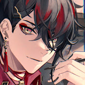
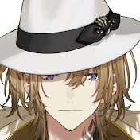
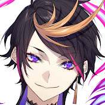

Luxiem
為日本公司彩虹社Nijisanji（日語：にじさんじ)所創立的EN組vtuber，於2021年12月20出道。 VTuber團體『Luxiem』的成員有Ike Eveland・Mysta Rias・Vox Akuma・Luca Kaneshiro・Shu Yamino 5名。各成員也依序展開SNS・YouTube頻道活動。為紀念出道、「チバニャン」製作的出道樂曲「Hope in the dark」也在各種音樂數位平台開始上架。NIJISANJI English Official YouTube channel也公開了原創Music Video。
出道曲:hope in the dark
成員
| VOX |  | 職業：惡魔 從過去來到現代的最強惡鬼。 對自己超出常人的身體能力非常有自信， 經常關注照顧著夥伴與部下。 |
| MYSTA | 職業：偵探 從過去來到現代的奇特偵探。 以與生俱來的天才頭腦、敏銳的觀察力以及出類 拔萃的推理能力，解開無數的謎題。 |
|
| IKE | 職業：小說家 從過去來到現代的文豪。 平常不太有活力，但只要看到有能夠當作小說的題材， 性格就會突然驟變。 |
|
| LUCA |  | 職業：黑手黨 從過去來到現代，脾氣暴躁的黑手黨老大。 擅長打架，但也有無法不管弱者的溫柔一面 |
| SHU |  | 職業：咒術師 從過去來到現代，擁有不可思議力量的咒術師。 雖然性格溫厚，但若是有人會危及到自己， 將豪不客氣地對他下詛咒。 |
彩虹社Nijisanji
中文常稱為「彩虹社」或「2434」，為ANYCOLOR株式會社（前稱「いちから株式會社」，Ichikara inc.）所開發的虛擬YouTuber手機應用程式，使用iPhone X的面孔捕捉功能讓2D角色獲得表情並進行 直播。同時也是自家運營VTuber業務的事務所名稱。 Nijisanji應用於2018年2月8日發布，原本只是聘請虛擬YouTuber來為手機應用程式進行宣傳，不過意 想不到的是月之美兔的爆紅而促成全體Nijisanji虛擬YouTuber人氣上升，遂建立事務所，投身於虛擬 YouTuber事業，之後也加入新成員並展開各種虛擬YouTuber活動及商品販賣。回最上方